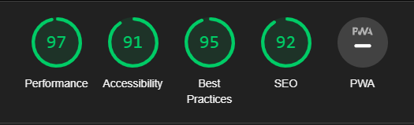
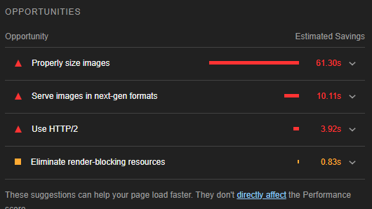
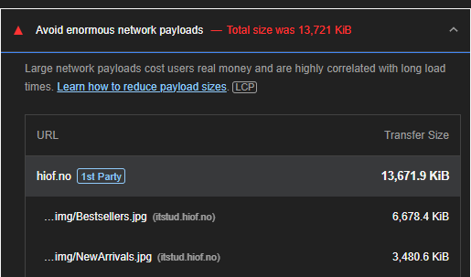
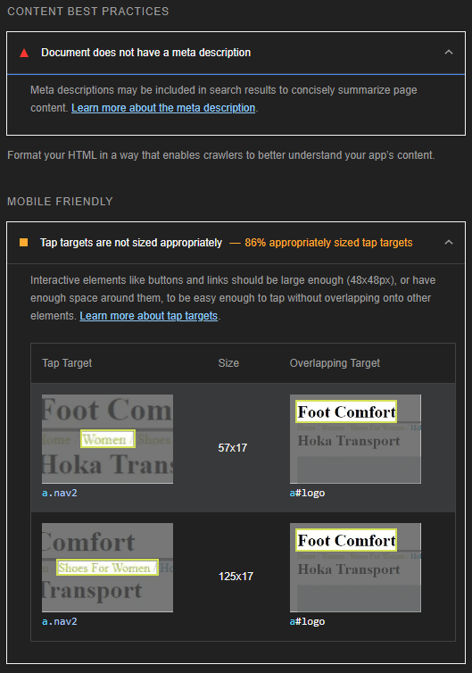
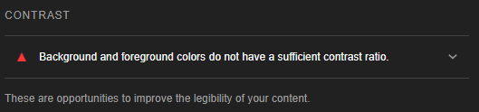
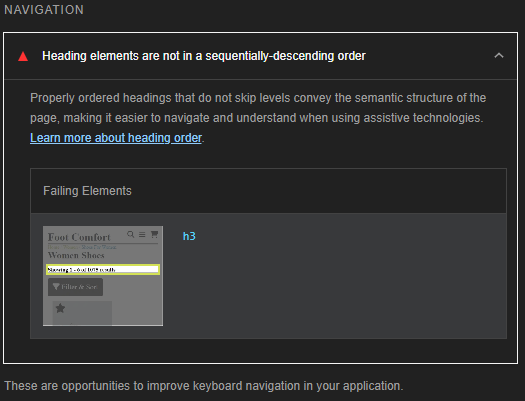
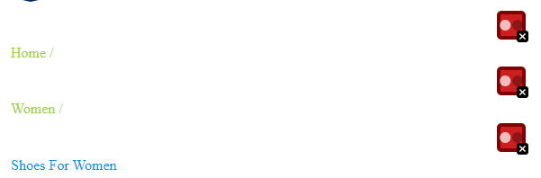
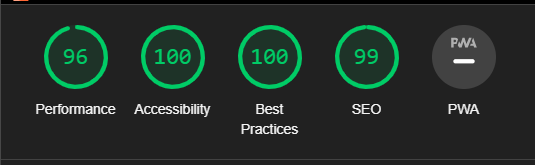

Analyse av oblig 3
I dette dokumentet skal jeg analysere alt på nettstedet med SEO, UU, ARIA, Metadata osv. for å gjøre nettstedet optimalisert for søk og tilgjengelighet
Nøkkelord
gjennom å ha sjekket mange forskjellige ord som er relevant til siden endte jeg opp med disse 4 ordene:
- Shoes
- Comfort
- Comfortable shoes
- Shoe
Jeg valgte disse 4 ordene fordi de er generelle nok til at folk søker på de ofte men spesifikke nok til at folk finner min side for det meste (med unntak av "shoes").
Lighthouse
Hovedsiden har overraskende svært få feil på lighthouse testen. Den største feilen som er bemerket er størelsen på bildefiler som sakker ned lasting av siden.
Dette var en feil jeg bemerket meg mens jeg laget siden men priortierte selve funksjonen av siden ovenfor hurtig lasting.
Seo klager i tillegg på at dokumentet ikke har meta beskrivelser og at noen "tap targets" ikke er riktig størelse
Utenom det er den største feilen at det er dårlig farge kontrast mellom noen a-tagger og bakgrunner
På produkt oversikt siden er det mer eller mindre det samme, den eneste forskjellen er at jeg har en h3 tag rett etter h1 som er en lett fiks
Konklusjon
Det var svært høye grader jeg fikk og de få feilene jeg hadde er lett å fikse og burde ikke ta lang tid.
WAVE - Webaim
Wave ga meg ikke så mye nytt info men jeg ble mer obs på at jeg har identiske lenker ved siden av hverandre på produkt siden som gjør det værre for en skjerm oppleser å lese relevant innhold og vanskligere å navigere med tastatur.
I tillegg fikk jeg en bedre forståelse av akkuratt hvorfor noen av a-taggene hadde for liten kontrast med bakgrunnen selv om jeg ikke syntes det personlig.
ChatGPT
ChatGPT kom med mange gode endringer som de andre testene ikke ga meg. De gode endringene er:
- Lite beskrivende sitetittel
- Lite beskrivende bilde alt tekst
- Header struktur
- Ikon beskrivelser
- ARIA roller
Sammenlignings tabel
| Lighthouse | Wave | ChatGPT |
|---|---|---|
| Bildestørrelse | Repeterende lenker | Lite beskrivende bilde alt tekst |
| Treg laste tid | Dårlig kontrast | Aria roller |
| Heading i ikke senkende rekkefølge | Header struktur |
Forbedringer på siden
Jeg halverte alle bildestørrelsene på hovedsiden bortsett fra sale.jpg som måtte bli større av en eller annen grunn. Dette var fremdeles ikke nok.
I tillegg endret jeg alle lenke farger til svart som jeg fjerner problemet med svak farge kontrast. dette var en endring jeg gjorte på alle sider.
På produkt oversikt siden fikset jeg på sorteringen av headings og endret størrelse og farge på "breadcrumbs" eller navigasjonsbaren.
På produkt siden var det ingen feil å fikse på utenom Meta descriptions.
Etter å ha gjort alle disse endringene var det noen uventete endringer som skjedde på sidene som jeg er usikker på hvorfor skjedde. Jeg kommer til å prioritere oppgaven og eventuelt fikse på
Resultatene etter alle fiksene:
Performance er ikke 100% hovedsaklig fordi fontawesome og normalize sakker ned lastingen av siden som er noe jeg ikke kan gjøre noe med.
tilgjengelighet
Skjermleseren leser hovedsaklig lenker og leser ikke så mye av hovedinnholdet. Dette kan være utfordrende hvis man ikke vet hvilken sko man vil ha eller hvor den er, så det burde forbedres sånn at kunder som "vindu shopper" kan finne noe de liker.
Med å trykke på TAB flere ganger kan man komme til all innhold man har lyst til, men man kan ha vanskligheter med å gå tilbake til toppen av siden så en slik knapp trenges på bunn av siden. Den nye "skip to main content" knappen virker perfekt både med og uten tastaturnavigering